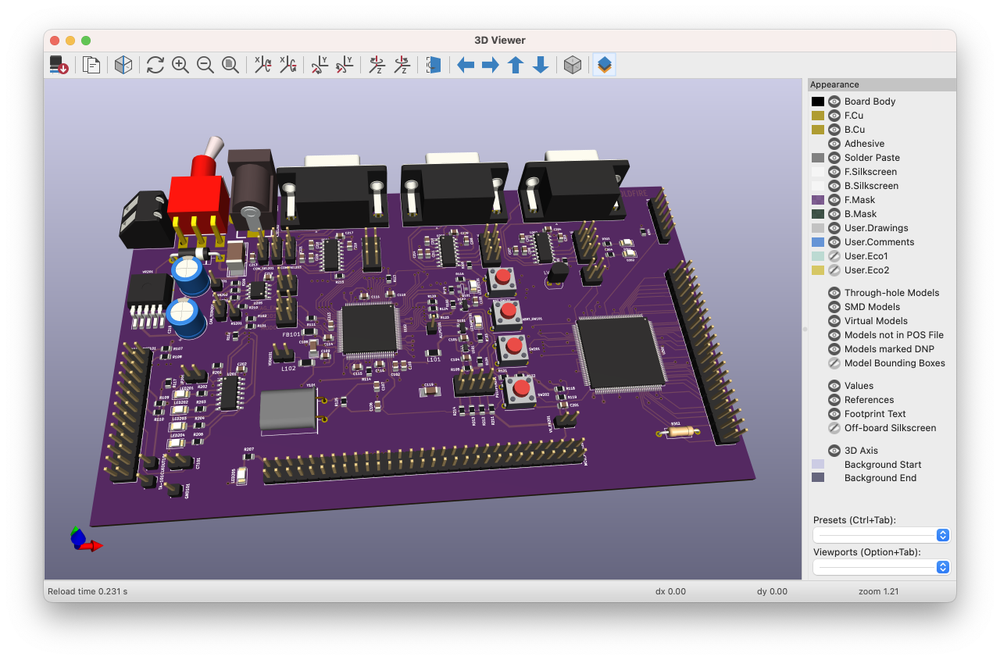
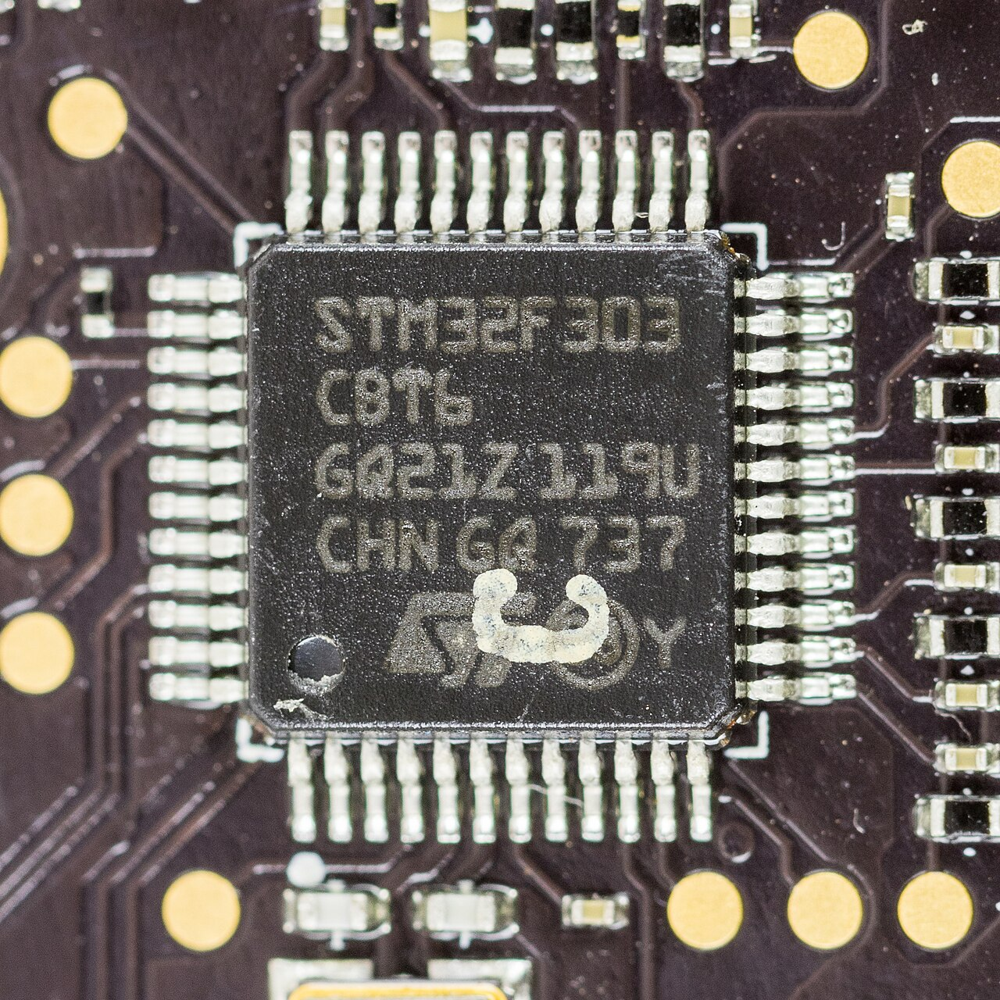

Use the detail already in the STEP.
Recover body dimensions, supported cylindrical or rounded shapes, and existing terminal sections. Supported fused body-and-pin shapes are separated so pin insertion does not inflate the package height.
STEP CONVERTER / GEOMETRY TO ANALYSIS
A PCB assembly can look complete in CAD while still missing the component parameters an engineering model needs. I built a tool to connect placement data, body geometry and lead information—and make each update traceable.


Public reference images show the two scales the workflow connects: a populated PCB assembly and the physical leads of a component. The tool’s implementation and validation evidence are described below.
THE COMPLETE FLOW
The tool brings the files into a shared coordinate frame, measures supported geometry and writes an updated component list. Review resolves uncertain matches and assumptions before the model moves into Sherlock and Ansys.
STEP assembly and the Sherlock part list derived from ODB++.
Match components; extract dimensions and supported terminals.
Resolve flagged matches, rotations and estimates. Import the CSV.
Build the FE model from the reviewed component data.
Import through External Model; complete analysis setup.
The reviewed tool takes STEP/STP and a Sherlock CSV, XLS or XLSX part list. ODB++ supplies the upstream component identity and placement through Sherlock. This release detects pad candidates in the STEP geometry.
01 / COMPONENT INTELLIGENCE
Part names, coordinates and CAD solids do not always line up. The tool aligns component centres, accounts for board side and orientation, and measures each matched component in its local frame.
Recover body dimensions, supported cylindrical or rounded shapes, and existing terminal sections. Supported fused body-and-pin shapes are separated so pin insertion does not inflate the package height.
Compatible pad layouts and package information can supply lead-layout proposals and marked dimensional estimates. A pad or drilled hole alone does not establish the manufactured terminal’s thickness, shape or electrical identity.
The useful difference: a dimension measured from a solid and a dimension inferred from a package assumption remain distinguishable in the output. Ambiguous matches, unsupported shapes and uncertain rotations remain visible to the engineer.
| Deliverable | What the engineer can use |
|---|---|
| Updated component list | Parts_updated.csv carries supported body and lead parameters into the native Sherlock part model, preserving the original column order and applicable units. |
| Traceable changes | The HTML report, change log and audit connect each changed field to its measurement or assumption. Rotation overlays and through-hole diagnostics focus review on unresolved details. |
| Detailed CAD companion | Per-part and assembly STEP files retain matched source solids, including details that scalar part-list fields cannot express. Newly proposed lead solids are explicitly labelled. |
The detailed STEP is a separate CAD route. It does not automatically replace native Sherlock components or update an existing mesh. Combining it with another model requires alignment, connection definitions and removal of duplicate geometry.
02 / MESH CONTINUITY
The second capability connects PCB preparation to the analysis environment. Geometry enrichment happens before meshing; mesh transfer then preserves the FE discretisation already generated in Sherlock.
Ansys documents this meshed-model route through CDB and External Model. It retains structured regions where they exist in the source mesh; the element topology depends on the Sherlock model. Materials, connections, supports and loads still need the appropriate analysis setup. Ansys workflow reference ↗
Automatic geometry enrichment ends at the exported data. Engineering review, Sherlock model generation and Mechanical setup complete the downstream workflow.
WHY AN ENGINEERING TEAM CARES
The transferable capability is connecting electronics design data, mechanical geometry and simulation—with an audit trail that engineers can inspect.
Prepare populated boards for vibration and thermo-mechanical assessment in pumps, drives and control hardware.
Carry component dimensions and mounting details into models used to assess thermal expansion and mechanical loading.
Build the PCB model that supports mount-layout and heat-conduction studies when screw towers provide key thermal paths.
These are application areas for the workflow, rather than claims of completed deployments in each sector.
Source reviewed: Sherlock_STEP_Updater_v1.4.zip, including its README, user guide and Python implementation. The core functions are prepare() and run() in the engine; read_model() and measure_component() for CAD; match_rows() for matching; infer_leads() for inference; and export_detailed() for the companion geometry.
Validation scope: the release includes synthetic STEP examples, automated checks and recorded reports. The referenced production STEP was unavailable for that release’s validation, and native Windows GUI operation and Sherlock import were not executed for v1.4. No new production conversion, mesh or stress result is claimed on this page.
Current boundaries: through-hole and fused-terminal cases can remain unresolved; pad-derived leads are assumptions; native CSV fields express supported parametric geometry. The CAD companion does not assign materials, contacts, mesh or loads.